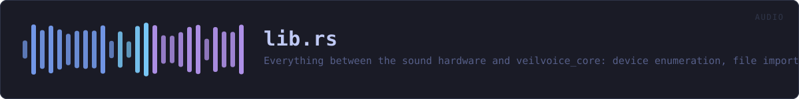

crates/veilvoice-audio/src/lib.rs
veilvoice-audio · 222 lines · read the source here · or on GitHub
Everything between the sound hardware and veilvoice_core(../veilvoice-core.html): device enumeration, file import and export, and the real-time capture → de-identify → playback path.
io, to decode any common audio file to monof32, write 16-bit WAV, or encode one in memory so it can be encrypted without ever landing on disk in the clear.devices, to enumerate inputs and outputs and spot a virtual audio cable.live, to run the engine live between two devices.
The live feature
devices and live sit behind the default-on live feature. They are the only part of this crate that needs cpal, and cpal has no backend for the BSDs. Everything else, meaning decoding, encoding and running the engine over a buffer, is pure Rust and builds anywhere, so turning the feature off keeps file processing working on platforms that cannot do live capture rather than failing to build at all.
Routing, and why a virtual cable matters
Scrambling a microphone is only useful if other applications can hear the result. Selecting a virtual audio cable as the output makes the veiled voice appear as an ordinary microphone to any call, stream or recorder on the machine, with no per-application setup. devices::find_virtual_cable detects an installed one so the UI can offer it directly.
In plain words
This is the plumbing between your microphone, your speakers and the part that changes the voice.
It finds the sound devices you have, opens the recording you point at whatever kind of file it is, and writes the result back out. For live use it does the whole loop while you talk -- in from the microphone, through the engine, out to whatever else is listening -- fast enough that a conversation still works.
It also reports how loud things are, which is what the level bars in the program are drawing.
WHAT THIS FILE CONTAINS
222 lines defining 5 functions (1 public), 1 type and 1 constant. Everything below is read out of the source, so it cannot disagree with the code.
The types it owns.
enum Errorline 69 — Everything that can go wrong in this crate.
What happens when it runs. These are the ways in: public, and nothing else in this file calls them, so they are what an outside caller reaches first.
deidentifyline 128 — De-identify a whole buffer of audio in one call.
WHAT CALLS WHAT
The functions this file defines, and the calls between them. An edge means the callee's name appears, called, inside the caller's body — a syntactic reading, not a type-resolved one.
The same graph as Mermaid source
%%{init: {"theme":"base","themeVariables":{"background":"#1a1b26","primaryColor":"#1f2335","primaryTextColor":"#c0caf5","primaryBorderColor":"#7aa2f7","secondaryColor":"#16161e","tertiaryColor":"#16161e","lineColor":"#737aa2","textColor":"#c0caf5","mainBkg":"#1f2335","nodeBorder":"#7aa2f7","clusterBkg":"#16161e","clusterBorder":"#2f3549","fontFamily":"ui-monospace, SFMono-Regular, Consolas, monospace","fontSize":"14px"}}}%%
flowchart TD
n_from["Error::from<br/>line 87"]
n_from["Error::from<br/>line 93"]
n_fmt["Error::fmt<br/>line 99"]
n_source["Error::source<br/>line 114"]
n_deidentify(["deidentify<br/>line 128"])
click n_from href "https://github.com/tilas01/veilvoice/blob/main/crates/veilvoice-audio/src/lib.rs#L87" "open the source"
click n_from href "https://github.com/tilas01/veilvoice/blob/main/crates/veilvoice-audio/src/lib.rs#L93" "open the source"
click n_fmt href "https://github.com/tilas01/veilvoice/blob/main/crates/veilvoice-audio/src/lib.rs#L99" "open the source"
click n_source href "https://github.com/tilas01/veilvoice/blob/main/crates/veilvoice-audio/src/lib.rs#L114" "open the source"
click n_deidentify href "https://github.com/tilas01/veilvoice/blob/main/crates/veilvoice-audio/src/lib.rs#L128" "open the source"
classDef entry fill:#1f2335,stroke:#7aa2f7,color:#c0caf5
class n_deidentify entry
classDef helper fill:#1f2335,stroke:#bb9af7,color:#c0caf5
class n_from,n_from,n_fmt,n_source helperThis site loads no third-party script, so it cannot run Mermaid; the diagram above is the same nodes and edges drawn by the generator instead. GitHub renders the source below directly.
ITEMS
| Item | Line | Documentation |
|---|---|---|
VERSION pub const | 64 | Crate version string, surfaced in the About panel. |
Error pub enum | 69 | Everything that can go wrong in this crate. |
Error::from fn | 87 | |
Error::from fn | 93 | |
Error::fmt fn | 99 | |
Error::source fn | 114 | |
deidentify pub fn | 128 | De-identify a whole buffer of audio in one call. |